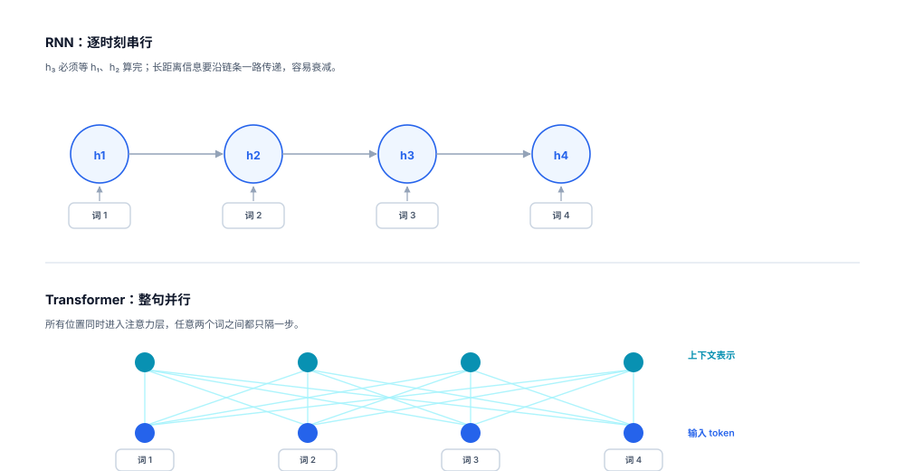
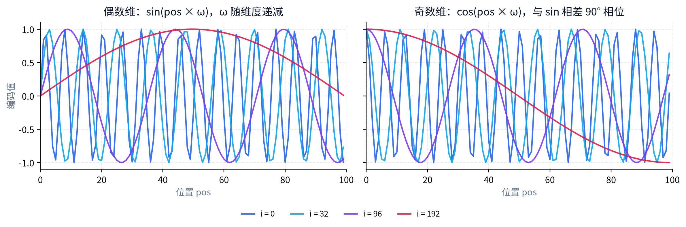
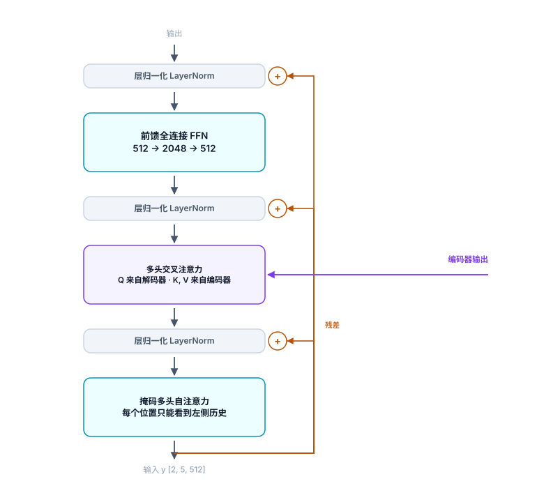

为什么要有 Transformer
在它出现之前，处理序列的主流方案是 RNN：一个词一个词地读，把历史压进一个隐藏状态。 这带来了两个绕不开的麻烦——算得慢，以及记不住。
RNN 的第 t 步必须等第 t−1 步算完，训练时无法并行；而且第一个词的信息要穿过 十几个隐藏状态才能影响最后一个词，距离一远就衰减得厉害。Transformer 的做法很干脆： 把「顺序」这件事交给位置编码，把「关联」这件事交给注意力。 任意两个位置之间只有一步计算，既并行，也不丢距离。

- 并行：整句话被展成一个矩阵
[batch, seq_len, d_model]，一次前向就能算完全部位置。 - 短路径：任意两词的距离恒为 1，长依赖不再需要「接力」。
- 可观察：注意力权重本身就是一张可解释的热力图，能看出模型在关注谁。
页面里的代码不涉及预训练、大规模语料和分布式训练，也不追求翻译效果。目标只有一个： 把结构本身写清楚——每个模块都能单独实例化、跑一次前向、打印出张量形状。
整体架构：四条流水线，六层堆叠
整个模型可以拆成四块：输入部分、编码器、解码器、输出部分。下面的图就是这四块的位置关系， 后面每一节都会对应到其中一个方块。

| 部分 | 包含什么 | 对应文件 | 作用 |
|---|---|---|---|
| 输入部分 | 词嵌入 + 位置编码 | dm01_input.py | 把词索引变成带位置信息的稠密向量 |
| 编码器 | 自注意力 + 前馈 + 残差归一化，× N | dm02 / dm03 / dm04 | 读入整句，输出每个位置的上下文表示 |
| 解码器 | 掩码自注意力 + 交叉注意力 + 前馈，× N | dm03 / dm05 | 按已生成的历史，逐词预测下一个词 |
| 输出部分 | 线性层 + Softmax | dm05（Generator） | 把向量映射到词表上的概率分布 |
输入部分：词嵌入与位置编码
dm01_input.py 做了两件事：把词索引查表成 512 维向量，
再给每个向量加上一个「位置指纹」。少了后者，模型看「我爱学习」和「学习爱我」是完全一样的。
3.1 词嵌入：查表 + 缩放
nn.Embedding 本质上是一张 vocab_size × d_model 的可训练查找表。
前向时它把输入的整数索引换成对应的行向量，再乘上 √d_model。
这一步缩放不是装饰：位置编码的数值范围在 ±1 之间，若词向量量级太小，两者相加时位置信号会把语义淹没。
17class Embeddings(nn.Module):
18 def __init__(self,vocab_size,d_model):
19 #vocab_size:词典大小，即去重后的单词个数 d_model:向量维度，表示词向量维度
20 super().__init__()
21 #定义变量
22 self.vocab_size = vocab_size
23 self.d_model = d_model
24
25 #定义词嵌入层，将单词索引（不是单词本身）转换为词向量
26 self.embed = nn.Embedding(vocab_size,d_model)
27
28 #前向传播函数
29 def forward(self,x):
30 return self.embed(x) * math.sqrt(self.d_model)
31 #将输入的单词索引转换为词向量，并乘以sqrt(d_model)，进行缩放，避免梯度消失和梯度爆炸用一个 2×5 的假句子验证一下，打印出来的形状正是 torch.Size([2, 5, 512])：
36def test_Embedding():
37 vocab_size,d_model = 1000,512
38
39 #定义词索引
40 x = torch.tensor([
41 [1,2,3,4,5]
42 ,[6,7,8,9,10]
43 ])
44
45 #定义词嵌入层
46 my_embed = Embeddings(vocab_size,d_model)
47 y = my_embed(x)
48 print(f'y:{y},y.shape:{y.shape}') #y.shape:torch.Size([2, 5, 512])3.2 位置编码：用正弦波给每个位置盖章
Transformer 没有循环结构，也就没有天然的「第几个词」的概念。论文给出的办法是用一组不同频率的正余弦函数， 为每个位置生成一个唯一的 512 维向量，再与词向量逐元素相加。
把 120 个位置 × 512 维的编码矩阵画出来，就是下面的波浪：左侧高频震荡、右侧近乎平缓， 每一行（每个位置）都是一组独一无二的条纹组合。这种设计还有个额外好处—— 任意两个位置的相对距离可以用线性变换表达，模型因此更容易学到「隔几个词」的概念。


对应代码只有十几行，关键在于把「1 / 100002i/d」改写成指数形式，避免逐元素求幂：
52class PositionalEncoding(nn.Module):
53 def __init__(self,d_model,dropout,max_len=50):
54 #parameters1:词向量的维度，即d_model
55 #parameters2:dropout率，防止过拟合
56 #parameters3:最大句子长度，默认为5000
57 super().__init__()
58
59 self.dropout = nn.Dropout(p=dropout)
60 #定义pe，用来保存位置编码结果
61 pe = torch.zeros(max_len,d_model) #shape为(max_len,d_model)
62 #生成大小为(max_len,d_model)的全零张量
63
64 #定义pos，用来保存位置信息
65 pos = torch.arange(0,max_len).unsqueeze(1) #shape为(max_len,1)
66 #根据公式逐步复现pe
67 # 公式为1/(10000^(2i/d_model)),经过log和exp转变为乘法，又因为取倒数，所以ln要乘以-1
68 #torch.arange(0,d_model,2)生成从0到d_model的偶数序列,满足公式中的2i
69 #-math.log表示取对数，并添加负号
70 div_term = torch.exp(torch.arange(0,d_model,2) * (-math.log(10000.0) / d_model))
71
72 #对pe赋值(偶数列)
73 pe[:,0::2] = torch.sin(pos * div_term)
74 #对pe赋值(奇数列)
75 pe[:,1::2] = torch.cos(pos * div_term)
76 # print(f'pe.shape:{pe.shape},pe:{pe}') #shape:[max_len,d_model]
77
78 # 对pe进行升维，保证后面可以和x进行相加
79 pe = pe.unsqueeze(0)
80
81 # 将pe转换为不可训练的张量,防止迭代器更新
82 self.register_buffer('pe',pe)
83
84
85
86 def forward(self,x):
87
88 #x的形状一定和pe的形状相同，即[batch_size,seq_len,d_model]
89 #将词向量和位置编码相加,:表示取所有,x.size(1)表示最大不超过x的第二个维度，即句子长度
90 #所以必须满足max_len>=seq_len
91 x = x + self.pe[:,:x.size(1),:]
92 print(f'x.shape:{x.shape},x:{x}') #x.shape:torch.Size([2, 5, 512])
93 print(f'pe.shape:{self.pe.shape},pe:{self.pe}') #pe.shape:torch.Size([1, 50, 512])
94 #todo:这里可以直接相加是因为pe进行了切割，
95 # 从原先的50变成了5，
96 # 然后又因为前面刚好是1，
97 # 所以可以以利用python的广播机制（各个维度的数字要么相等，要么数字是1，其他情况都会报错）
98
99 return self.dropout(x)一是 max_len 的默认值是 50，但注释里写着 5000——句子超过 50 个词就会在
self.pe[:, :x.size(1), :] 处切片越界，得先改这个参数。
二是 pe 用 register_buffer 注册而不是存成普通属性，
这样它跟着模型一起搬到 GPU，但不会被当成参数更新。
exp(arange(0, d, 2) * (-log(10000)/d) 就是 10000^(-2i/d)，
取负号是因为公式里它是分母。写成 exp/log 的形式，既能避免 10000 ** (2i/d) 溢出，
也比逐项除法更快。
注意力机制：一句话里，谁该看谁
注意力的核心是一次「软查询」：每个位置拿出一个 Query，去和所有位置的 Key 比对相似度， 再用相似度加权求和对应的 Value。就这么三步，没有任何循环。

为什么要除以 √d_k？因为两个 64 维随机向量的点积方差约为 64，
不做缩放的话数值会大到让 softmax 退化成「赢者通吃」的硬选择，梯度几乎为零。
除以维度平方根，正好把方差拉回 1 附近。
123def attention(query,key,value,mask=None,dropout=None):
124 """
125 :param query: 查询张量，形状为[batch_size,seq_len,d_model]
126 :param key: 键张量，形状为[batch_size,seq_len,d_model]
127 :param value: 值张量，形状为[batch_size,seq_len,d_model]
128 :param mask: 掩码张量，形状一般和attension_scores(注意力权重)相同，[seq_len,seq_len],后续需要升维
129 :param dropout:随机失活
130 """
131 d_k = query.size(-1) #d_k为query的最后一个维度，即d_model(词向量维度)
132 attention_scores = torch.matmul(query,key.transpose(-2,-1)) / math.sqrt(d_k)
133 print(f'attention_scores.shape:{attention_scores.shape}')
134 if mask is not None:
135 mask = mask.unsqueeze(0)
136 attention_scores = attention_scores.masked_fill(mask==0,-1e9)
137 #计算注意力权重
138 attention_weights = torch.softmax(attention_scores,dim=-1)
139
140 if dropout is not None:
141 attention_weights = dropout(attention_weights)
142
143 return torch.matmul(attention_weights,value), attention_weights
代码里唯一的分支是掩码：凡是 mask == 0 的位置都被填成 -1e9，
经过 softmax 后这些位置的权重约等于 0，等于「物理屏蔽」。掩码在解码器里尤其关键——
生成第 3 个词时绝不能看到第 4、5 个词。

mask.unsqueeze(0) 把 [head, seq, seq] 升成
[1, head, seq, seq]，是为了和 [batch, head, seq, seq]
的注意力分数做广播——batch 维上的 1 会自动复制到每个样本。
多头注意力：把 512 维切成 8 份并行看
一组 Q/K/V 只能学到一种「关注方式」。多头把 512 维拆成 8 个 64 维的子空间， 让 8 个头各自去学不同的关系（指代、句法、邻近……），最后拼回来再投影一次。

代码里最值得盯住的是那三行 view 与 transpose：
形状从 [2, 5, 512] 变成 [2, 5, 8, 64]，
再转置成 [2, 8, 5, 64]——把「头」提到 batch 后面，
这样 8 个头就变成了 8 个独立的样本，后续的 attention() 一行都不用改。
6def clones(module, N):
7 return nn.ModuleList([copy.deepcopy(module) for _ in range(N)])
8
9class MultiHeadedAttention(nn.Module):
10 def __init__(self,head,embeded_dim,seq_len,dropout):
11 super().__init__()
12 self.head = head #定义头数
13 self.embeded_dim = embeded_dim
14 self.dropout = nn.Dropout(p=dropout)
15 # 词向量维度一定要整除头数，否则报错
16 assert embeded_dim % head==0
17 # 每个头分析的词向量维度
18 self.d_k = embeded_dim // head
19 self.seq_len = seq_len
20 self.Linears = clones(nn.Linear(embeded_dim, embeded_dim), 4)
21 self.attn = None #占位符，方便后面传值
22
23 def forward(self,query,key,value,mask=None):
24 batch_size = query.size(0)
25 query, key, value = [
26 model(x).view(batch_size, self.seq_len, self.head, self.d_k).transpose(1, 2)
27 for model, x in zip(self.Linears, (query, key, value))
28 ]
29
30 # epoch=0,model=self.Linear[0],x = query
31 # epoch=1,model=self.Linear[1],x = key
32 # epoch=2,model=self.Linear[2],x = value
33
34 #进行Attention计算
35 x, self.attn = attention(query, key, value, mask=mask, dropout=self.dropout)
36 print(f'x.shape:{x.shape}')
37 print(f'self.attn.shape:{self.attn.shape}')
38 #x的shape是[batch_size,head,seq_len,d_k]
39 x = x.transpose(1, 2).contiguous().view(batch_size, self.seq_len, self.head*self.d_k)
40 #带入最后一个线性层计算
41 return self.Linears[-1](x)
这里的 clones 用 copy.deepcopy 复制了 4 个
nn.Linear——Q、K、V 各一个，加上输出投影一个。必须是深拷贝：
若直接写 [nn.Linear(...)] * 4，四个位置会共享同一份参数，模型就退化成单头了。
8 个头、每头 64 维，总维度和单头 512 维完全相同。多头不是「算 8 遍」，而是把同一份预算切成 8 份并行使用， 参数量基本不变，表达却更丰富。
前馈网络：逐个位置做一次「深加工」
注意力负责在位置之间搬运信息，前馈网络负责在每个位置上独立地做非线性变换。 两层线性 + 一个 ReLU，中间维度放大 2~4 倍。
66class FeedForward(nn.Module):
67 # d_model是词向量的维度，d_ff是前馈全连接层指定的维度
68 def __init__(self,d_model,d_ff,dropout_p = 0.5):
69 super().__init__()
70 self.d_model = d_model
71 self.d_ff = d_ff
72 self.Linear1 = nn.Linear(d_model, d_ff)
73 self.Linear2 = nn.Linear(d_ff, d_model)
74 self.dropout = nn.Dropout(p=dropout_p)
75
76 def forward(self,x):
77 x = self.Linear2(torch.relu(self.Linear1(x)))
78 return x
注意它是对最后一维做变换：输入 [2, 5, 512]，
中间变成 [2, 5, 1024]，输出回到 [2, 5, 512]。
nn.Linear 只作用于最后一维，前两个维度（batch 与句长）原封不动，
所以 5 个位置之间互不干扰——这也是它和注意力最本质的分工。
先升维再降维，相当于在一个更高维的空间里做非线性筛选，然后再压缩回原来的通道数。 如果只用一个线性层，整个 FFN 就退化成矩阵乘法，叠多少层都等价于一层。
层归一化与残差：让六层能叠起来
单独一个子层好写，难的是把六个这样的子层串起来还不崩。残差连接保住原始信息， 层归一化把数值拉回稳定区间——这两样是整个堆叠能训练的前提。
这里最容易和 BatchNorm 搞混。区别在于「沿哪个方向统计」：BatchNorm 对同一个特征、跨样本求均值； LayerNorm 对同一个样本、跨特征求均值。序列任务里句长参差不齐，跨样本统计会被 padding 带偏， 所以 Transformer 一律用 LayerNorm。
| 对比项 | BatchNorm | LayerNorm |
|---|---|---|
| 统计方向 | 同一特征、不同样本 | 同一样本、不同特征 |
| 常见场景 | 图像（CNN） | 序列（RNN / Transformer） |
| 对 batch 大小 | 敏感，小 batch 波动大 | 不敏感 |
| 推理时 | 依赖训练期累计的均值方差 | 逐样本即时计算，训练推理一致 |
6class LayerNorm(nn.Module):
7 def __init__(self, features, eps=1e-6):
8 """
9 :param features: 词向量维度
10 :param eps: 一个很小的数，防止分母为0
11 """
12 super().__init__()
13 #a的作用是缩放标准化后的结果,初始化为1
14 self.a = nn.Parameter(torch.ones(features))
15 #b的作用是平移标准化后的结果,初始化为0
16 self.b = nn.Parameter(torch.zeros(features))
17 self.eps = eps
18
19 def forward(self,x):
20 # x的shape是[batch_size,seq_len,d_model]->[2,5,512]
21 #计算最后一维的均值和方差
22 x_mean =x.mean(-1,keepdim = True) #x_mean的形状是[2,5,1]
23 x_std = x.std(-1,keepdim = True) #x_std的形状也是[2,5,1]
24 return self.a *(x - x_mean)/(x_std +self.eps) +self.b
残差连接则把子层的输入原样加到输出上。对六层堆叠来说，这等于给梯度开了一条直通车道：
反向传播时即便某一层的梯度很小，也能沿着 + x 这条捷径传回去。
代码把它封装成 SublayerConnection，任何子层都能套进去：
44class SublayerConnection(nn.Module):
45 def __init__(self,size,dropout):
46 super().__init__()
47 self.norm = LayerNorm(features=size)
48 self.dropout = nn.Dropout(p=dropout)
49 def forward(self,x,sublayer):
50 """
51 :param sublayer:输入的子层，例如多头自注意力子层或前馈神经网络子层
52 :param x:输入张量，形状为[batch_size,seq_len,d_model]
53 """
54 result = x + self.dropout(self.norm(sublayer(x)))
55 return result论文原版是 Post-LN：Norm(x + Sublayer(x))，归一化包住整条残差支路。
后来被广泛采用的 Pre-LN 是 x + Sublayer(Norm(x))，归一化挪到子层入口。
而这版代码写的是 x + Dropout(Norm(Sublayer(x)))：归一化作用在子层输出上，
残差支路本身不经过归一化。也就是说，它只符合 Pre-LN 的一半——残差主轴不被归一化，
所以梯度更稳、可以省掉 warmup；但子层的输入仍是未归一化的原始 x。
三种写法都能训练，差别在数值稳定性上，读代码时先认清自己看的是哪一种。
编码器层：两个子层，重复六次
把前面几块拼起来：一个编码器层 = 多头自注意力 + 前馈网络，各自套一层残差与归一化； 再把这一层复制 6 份、最后补一次归一化，就是编码器。

代码结构非常直白：clones(SublayerConnection(...), 2) 造出两个连接器，
分别套在多头上注意力和前馈网络上。lambda 只是把 mask
提前绑定进去，让子层签名统一成「输入→输出」。
14class Encoderlayer(nn.Module):
15 def __init__(self,d_model,self_attn,feed_forward,dropout=0.5):
16 """
17 :param d_model: 词嵌入维度，即词向量维度
18 :param self_attn: 多头注意力机制子层
19 :param feed_forward: 前馈全连接层FNN
20 :param dropout: 随机失活
21 """
22 super().__init__()
23 self.d_model = d_model
24 self.self_attn = self_attn
25 self.feed_forward = feed_forward
26
27 #一个编码器层含有两个子层，因此需要克隆两个子层对象,返回的是一个可迭代列表，包括[子层对象1，子层对象2]
28 self.sublayer = clones(SublayerConnection(size=self.d_model,dropout = dropout),2)
29
30 #定义前向传播
31 def forward(self,x,mask):
32 #第一层子层连接->多头注意力子层
33 x = self.sublayer[0](x,lambda x:self.self_attn(x,x,x,mask))
34 #第二层子层连接->前馈全连接层
35 x= self.sublayer[1](x,lambda x : self.feed_forward(x))
36 return x
编码器本身只是一个循环 + 收尾的归一化。值得注意的是它并不改变形状——
进去 [2, 5, 512]，出来还是 [2, 5, 512]，
变的只是每个向量里「装了什么」。
57class Encoder(nn.Module):
58 def __init__(self,layer,N):
59 super().__init__()
60 #layer:单个编码器层，N：编码器层数
61 #克隆N个编码器层对象
62 self.layers = clones(layer,N)
63 self.norm = LayerNorm(layer.d_model)
64
65
66 def forward(self,x,mask):
67 """
68 :param x: 输入数据，形状为[seq_len,batch_size,embeded_dim]
69 :param mask: 掩码张量，形状为[head,seq_len,seq_len]
70 """
71 for layer in self.layers:
72 x = layer(x,mask)
73 return self.norm(x)上面那种「残差支路不归一化」的写法，会让主轴上的数值随层数累积放大，堆到第 6 层时已经偏离原点很远。 出口处再归一化一次，能把表示重新拉回稳定的分布，交给解码器使用。
解码器层：三个子层，两套掩码
解码器比编码器多了一个「交叉注意力」子层。它先用掩码自注意力看自己已经生成了什么， 再去编码器输出里查资料，最后前馈加工，输出下一个词的概率。

三个子层的输入输出各不相同，这是解码器最容易写错的地方：第一个子层是自注意力
(x, x, x)；第二个子层的 Q 用解码器当前的 x，而 K、V 都来自编码器输出
(x, encoder_output, encoder_output)；第三个子层就是普通前馈。
22class Decoderlayer(nn.Module):
23 def __init__(self, d_model, self_attn, src_attn, feed_forward, dropout=0.5):
24 """
25 :param d_model: 词嵌入维度，即词向量维度
26 :param self_attn: 自注意力机制子层，处理解码器内部的自注意力机制
27 :param src_attn: 源注意力机制子层，处理解码器与编码器之间的注意力机制
28 :param feed_forward: 前馈全连接层
29 :param dropout: 随机失活
30 """
31 super().__init__()
32 # 定义属性
33 self.d_model = d_model
34 self.self_attn = self_attn
35 self.src_attn = src_attn
36 self.feed_forward = feed_forward
37 self.sublayer = clones(SublayerConnection(size=d_model, dropout=dropout), 3)
38
39 def forward(self, x, encoder_output, source_mask, target_mask):
40 """
41 :param x: 解码器输入的词嵌入向量
42 :param encoder_output: 编码器的输出
43 :param source_mask: 源语言的掩码，用于编码器、解码器之间的注意力机制
44 :param target_mask: 目标语言的掩码，用于解码器内部的自注意力机制
45 """
46 # 第一个子层，自注意力机制子层
47 x = self.sublayer[0](x, lambda x:self.self_attn(x,x,x,target_mask))
48 #第二个子层，源注意力机制子层(encoder_output要传2次)
49 x = self.sublayer[1](x, lambda x: self.src_attn(x, encoder_output, encoder_output, source_mask))
50 #第三个子层，前馈全连接层
51 x = self.sublayer[2](x, lambda x: self.feed_forward(x))
52 return x
两套掩码各管一件事：target_mask 是「未来掩码」，把当前位置右侧的分数填成
-1e9，防止训练时偷看答案；source_mask 是「padding 掩码」，
把补齐位的分数屏蔽掉，免得模型去关注 <pad>。
92class Decoder(nn.Module):
93 def __init__(self,layer,N):
94 """
95 :param layer: 单个解码器层（Decoderlayer）
96 :param N:解码器层的个数
97 """
98 super().__init__()
99 self.layers = clones(layer, N)
100 self.norm = LayerNorm(layer.d_model)
101
102 def forward(self,x, encoder_output, source_mask, target_mask):
103 for layer in self.layers:
104 x = layer(x, encoder_output, source_mask, target_mask)
105 return self.norm(x)最末端的 Generator 把 512 维表示映射成词表上的对数概率：
144class Generator(nn.Module):
145 def __init__(self, d_model, vocab):
146 super().__init__()
147 self.linear = nn.Linear(d_model, vocab)
148
149 def forward(self, x):
150 x = self.linear(x)
151 return F.log_softmax(x, dim=-1)配合 nn.NLLLoss 使用时，log_softmax 比「先 softmax 再取 log」
数值更稳：它把指数运算和归一化合并成一步，避免概率很小时 log(0) 溢出。
如果改用 CrossEntropyLoss，这里就该输出裸 logits。
组装：一个 forward 串起全部
最后一步是把四块零件装进一个容器。整个 forward 只有五行有效代码，
却把 681 行的零件全部串了起来。
8class my_transformer(nn.Module):
9 def __init__(self,source_embded,encoder,target_embded,decoder,generator):
10 """
11 :param source_embded: 输入部分的词嵌入层+位置编码
12 :param encoder: 编码器
13 :param target_embded:真实值输入部分的词嵌入层+位置编码
14 :param decoder:解码器
15 :param generator:输出部分
16 """
17 super().__init__()
18 self.source_embded = source_embded
19 self.encoder = encoder
20 self.target_embded = target_embded
21 self.decoder = decoder
22 self.generator = generator
23
24 def forward(self,source_x,target_y,source_mask,target_mask):
25 """
26 :param source_x: 输入部分,形状为[batch_size,seq_len,d_model]
27 :param target_y: 真实值输入部分,形状为[batch_size,seq_len,d_model]
28 :param source_mask: 输入部分的掩码,(padding mask),防止补丁部分的干扰，形状为[head,seq_len,seq_len]
29 :param target_mask: 真实值输入部分的掩码,(sentence mask)，防止未来信息泄露，形状为[head,seq_len,seq_len]
30 """
31 emmbeded_x = self.source_embded(source_x)
32 encoder_output = self.encoder(emmbeded_x,source_mask)
33 emmbeded_y = self.target_embded(target_y)
34 decoder_output = self.decoder(emmbeded_y,encoder_output,source_mask,target_mask)
35 return self.generator(decoder_output)数据在五个环节之间流动时，形状变了一次又一次，但只有最后一步才真正变大：
| 步骤 | 运算 | 输出形状 | 含义 |
|---|---|---|---|
| 1 | source_embded(source_x) | [2, 5, 512] | 词索引 → 向量 + 位置 |
| 2 | encoder(x, source_mask) | [2, 5, 512] | 六层上下文编码 |
| 3 | target_embded(target_y) | [2, 5, 512] | 已生成序列的嵌入 |
| 4 | decoder(y, enc, ...) | [2, 5, 512] | 融合编码器信息的表示 |
| 5 | generator(dec) | [2, 5, 1000] | 每个位置对 1000 个词的对数概率 |
下面这段就是可以直接跑起来的验证代码，用的全是假索引，只为确认形状与连接关系：
39def test_Transformer():
40 #实例化编码器
41 #head,embeded_dim,seq_len,dropout
42 mha = MultiHeadedAttention(8, 512,seq_len = 5 ,dropout = 0.5)
43 ff = FeedForward(512, 1024)
44 #d_model,self_attn,feed_forward,dropout=0.5
45 layer1 = Encoderlayer(d_model = 512, self_attn = mha, feed_forward = ff, dropout = 0.5)
46 encoder = Encoder(layer1, 6)
47 #实例化解码器
48 self_attn = copy.deepcopy(mha)
49 src_attn = copy.deepcopy(mha)
50 layer2 = Decoderlayer(d_model = 512, self_attn = self_attn, src_attn=src_attn, feed_forward = ff, dropout = 0.5)
51 decoder = Decoder(layer2, 6)
52
53 vocab_size = 1000
54 d_model = 512
55 dropout_p = 0.5
56 my_embded = nn.Embedding(vocab_size, d_model)
57 my_pe = PositionalEncoding(d_model, dropout_p)
58 source_embded = nn.Sequential(my_embded, my_pe)
59 target_embded = copy.deepcopy(source_embded)
60
61 generator = Generator(d_model, vocab_size)
62
63 transformer = my_transformer(source_embded, encoder, target_embded, decoder, generator)
64
65 source_x = torch.LongTensor([
66 [1, 2, 3, 4, 5],
67 [7, 8, 9, 10, 11]
68 ])
69 target_y = torch.LongTensor([
70 [1, 2, 3, 4, 5],
71 [6, 7, 8, 9, 10]
72 ])
73 source_mask = torch.zeros(8,5,5)
74 target_mask = torch.zeros(8,5,5)
75 output = transformer(source_x, target_y, source_mask, target_mask)
76 print(f"output.shape:{output.shape}")上面传进去的 target_y 是「真实答案」——这叫 teacher forcing，训练时并行喂入整句，
靠因果掩码保证不偷看未来。而真正生成时没有答案可喂，只能把上一步的输出接回输入，一个词一个词地滚。
这份代码只实现了前者，也就是训练路径。
运行与复现
六个文件按依赖顺序串成一条链：每个模块 import 上一个模块，
自带 __main__ 测试。想验证哪一层，直接跑那个文件即可。
Python 3.8+ / PyTorch 1.10+
只需要 torch、numpy；matplotlib 仅 dm01 里 import 了但未使用，可删。
01 → 02 → 03 → 04 → 05 → 06
dm06 导入 dm05，dm05 导入 dm04，一路回溯到 dm01。
全部是形状信息
每个测试函数会打印各阶段的 .shape，最终 output.shape: torch.Size([2, 5, 1000])。
# 1. 装依赖
pip install torch numpy
# 2. 进入源码目录（六个文件必须在同一目录）
cd src
# 3. 逐层验证，随便挑一个跑
python dm01_input.py # 词嵌入 / 位置编码 / 注意力
python dm04_Encoderlayer.py # 六层编码器
python dm06_transformer.py # 完整模型，输出 [2, 5, 1000]
如果只想看张量形状、不想看满屏打印，把各模块里的 print 删掉即可。
想换句子长度，记得同步改 MultiHeadedAttention 的
seq_len 参数——它写死在了 view 里。
这份实现的边界
代码能跑通、能验证，但离「可训练的模型」还有距离。把不足写清楚，比假装它完美更有用。
- seq_len 被写死：
MultiHeadedAttention.forward用self.seq_len做view，换个句长必须重新实例化； 正确做法是从query.size(1)动态取。 - 没有掩码生成函数：
mask由外部传入torch.zeros(8,5,5)， 只是占位。真要训练，得补padding_mask与subsequent_mask两个工具函数。 - 没有训练循环：只有前向与形状验证，缺少优化器、损失、学习率调度和梯度裁剪。
- 嵌入权重未共享：原论文让编码器、解码器与输出层共享同一张词嵌入表，并把权重乘 √d_model；这里用了两份独立拷贝。
- dropout=0.5 偏大：原始论文用的是 0.1，0.5 在推理/调试阶段会把表示打得太散。
- 推理路径缺失：没有 greedy / beam search 的逐词生成，只能跑 teacher forcing。
结构图看一百遍，也不如自己把 view、transpose、
contiguous 写一遍——多头注意力的形状到底怎么翻，只有打印出来对着
[2,8,5,64] 数一遍才真的清楚。